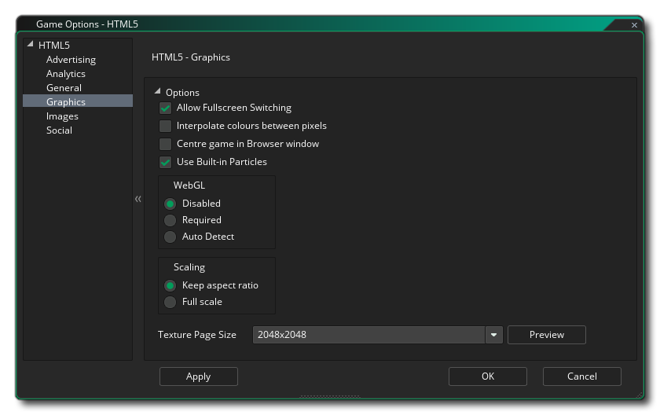
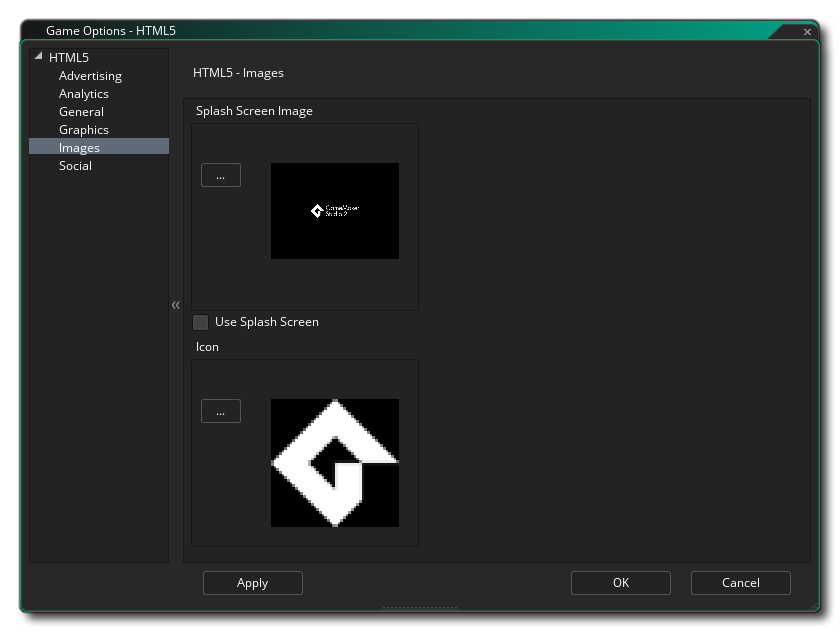
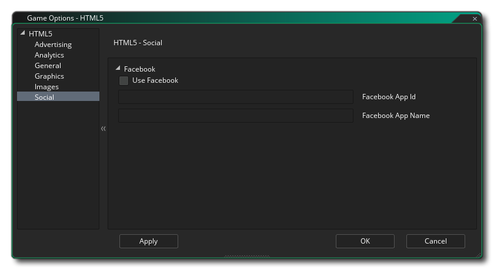

Esta sección describe las diferentes opciones disponibles para usted que controlan cómo se compilarán sus proyectos de juegos HTML5. Las diferentes secciones son:
En esta sección, tienes algunas opciones generales en la parte superior:
- Salida de depuración a consola: Esto enviará todos los resultados de depuración a la consola JS de su navegador. Esto está desactivada por defecto.
- Mostrar Cursor: Esto deshabilitará el cursor del mouse cuando esté sobre el lienzo del juego. Esto está predeterminado.
- Mostrar alerta de "Ejecución de servidor externo": si está probando un juego localmente (es decir, haciendo clic en el archivo de índice desde su computadora en lugar de un servidor, no recomendado), normalmente recibirá una advertencia que le informará que las cosas no funcionarán. puede esperar debido a la seguridad del navegador para archivos locales. Puede suprimir esta advertencia desmarcando esta opción. Está activado por defecto.
Debajo de la configuración general, tiene las opciones avanzadas, que son:
- Archivo incluido como index.html: Esto es para agregar un archivo personalizado "index.html" para usar en lugar del archivo predefinido que GameMaker Studio 2 genera de manera predeterminada. Esto puede ser muy útil si tiene implementado un diseño de sitio web o desea incluir ciertas características en todas sus compilaciones HTML5. El archivo a usar debe incluirse como un archivo incluido en el proyecto del juego.
- Extensión de la barra de carga: Esto cambiará la barra de carga predeterminada para una que se haya agregado a su proyecto de GameMaker Studio 2 como una extensión (hay una demostración de esto disponible desde la página de inicio ).
- Anteponer salida.js: aquí puede anteponer la *.js salida con cualquier JavaScript adicional necesario para su juego. Por ejemplo, una aplicación Chrome Store puede requerir que agregue window.localStorage = undefined; a la salida JS, para la cual usaría esta opción.
- Título del navegador: aquí puede asignar texto en la barra de título de la pestaña del juego en el navegador.
- Versión: el número de versión para su proyecto.
- Nombre de la carpeta: el nombre de la carpeta donde se almacenarán los archivos de su juego HTML5 (el valor predeterminado es "html5game").
- Nombre de salida: este es el nombre del archivo HTML de salida y puede cambiarse por otro que no sea el "index.html" predeterminado.
Esta sección le permite agregar análisis a su juego, permitiéndole usar ciertos productos de terceros para rastrear su juego y sus ventas o jugadas. Puede especificar si usa Flurry Analytics o Google Analytics para rastrear su juego. Debido a la naturaleza de estas funciones, solo puede tener una activa a la vez, y una vez que haya marcado Enable Flurry Analytics o Enable Google Analytics, también debe agregar la identificación única que le asignaron en el área correspondiente.
Para obtener más información general sobre análisis, consulte la Base de conocimientos YoYo y para obtener información sobre las funciones que puede usar para enviar datos analíticos, consulte aquí.

Aquí puede cambiar los siguientes detalles relacionados con la visualización de su juego (tenga en cuenta que no todos los navegadores mostrarán su juego de la misma manera, así que pruebe estas opciones en tantos navegadores como sea posible para asegurarse de que tengan el efecto deseado):
- Permitir el cambio a pantalla completa: al comprobar esto, el usuario podrá alternar el juego del modo de ventana al modo de pantalla completa con <CTRL> + <CMD> + <F> en Mac y F10 en Windows. Esto está predeterminado.
- Interpolar colores entre píxeles: activa la interpolación, que básicamente "suaviza" los píxeles. para gráficos nítidos de píxeles, debería estar apagado, pero si tiene buenas mezclas alfa y gráficos de bordes suavizados, es mejor dejarlos encendidos. El valor predeterminado es desactivado.
- Centre el juego en el navegador: al marcar esto se centrará automáticamente la pantalla del juego dentro del navegador que ejecuta el juego.
- Usar partículas incorporadas Esta opción exportará los sprites necesarios para el sistema de partículas integrado junto con su juego. Estos sprites se almacenan en páginas de texturas individuales, lo que significa que no son el método más eficiente para generar partículas para esta plataforma, por lo tanto, se recomienda que (a menos que use WebGL) desmarque esta opción y use sus propios sprites de partículas que serán almacenado en las principales páginas de texturas para su juego.
- WebGL: elija si desea desactivar el soporte WebGL, hacerlo opcional (detección automática) o convertirlo en un requisito para su juego. Se debe tener en cuenta que para probar el rendimiento en cualquier circunstancia, debe tenerlo como deshabilitado, y luego establecerlo normalmente para que se autodetecte para su publicación. Hacerlo un requisito puede reducir considerablemente la compatibilidad que tiene tu juego con diferentes tipos de navegadores.
- Escalado: su juego puede configurarse para escalar el lienzo de dibujo automáticamente para mantener la relación de aspecto dentro del navegador, o puede seleccionar que se estire para ajustarse. La opción de estirar para ajustar no hará una pantalla completa del juego en el navegador, sino que estirará lo que se dibuja para ajustarse al tamaño del lienzo, según lo define la primera sala del juego.
Finalmente, existe la opción de establecer el tamaño de la Página de Textura. El tamaño predeterminado (y el más compatible) es 2048x2048, pero puede elegir entre 256x256 hasta 8192x8192. También hay un botón marcado Vista previa que generará las páginas de textura para esta plataforma y luego abrirá una ventana para que pueda ver cómo se ven. Esto puede ser muy útil si desea ver cómo se estructuran las páginas de textura y para evitar que las páginas de textura sean más grandes (o más pequeñas) de lo necesario.
NOTA: tenga en cuenta que cuanto mayor sea el tamaño de la página de textura, menos compatible será su juego.

Esta sección es donde puedes definir el favicon y la pantalla de bienvenida. El icono debe ser creado como un *.ico archivo y puede tener un tamaño de 16x16, 32x32, 48x48 o 64x64 píxeles y profundidad de color de 8 bits, 24 bits o 32 bits. La pantalla de bienvenida debe ser del tamaño del lienzo que mantendrá su juego y anulará cualquier barra de carga si marca la opción Usar pantalla de bienvenida (es decir: puede tener una barra de carga, O una pantalla de presentación, pero no ambas). Se permiten imágenes más pequeñas o más grandes, pero se ajustarán a escala.
Vale la pena señalar que GameMaker Studio 2 tiene una herramienta Project Image Generator que se puede utilizar para crear automáticamente todas las imágenes necesarias para todas las plataformas de destino diferentes en las que se está compilando su juego. Si usa esta herramienta, debe revisar las imágenes creadas para asegurarse de que son lo que necesita.

La pestaña social se usa para configurar la comunicación de Facebook en tu juego. Si necesita las funciones de Facebook, debe hacer clic en la casilla de verificación "Usar Facebook" y luego proporcionar el nombre de la aplicación de Facebook y el nombre para mostrar de la aplicación de Facebook. Tenga en cuenta que se accede a todas las funciones de Facebook a través de una extensión, y cuando primero marca la casilla Usar Facebook, se le pedirá que descargue e instale la extensión de Facebook del Mercado (es posible que deba iniciar sesión en su cuenta YoYo antes de poder descargarla)..